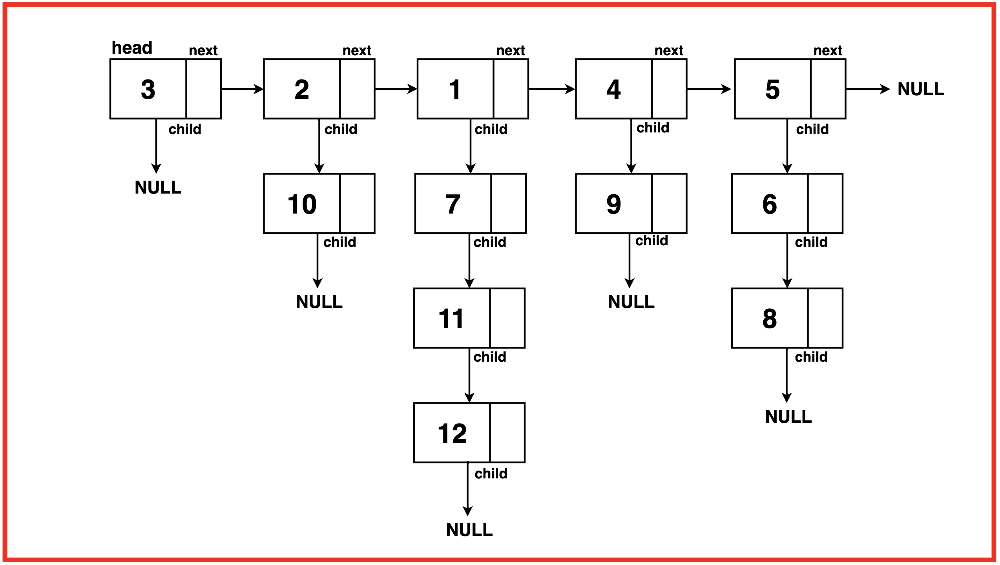
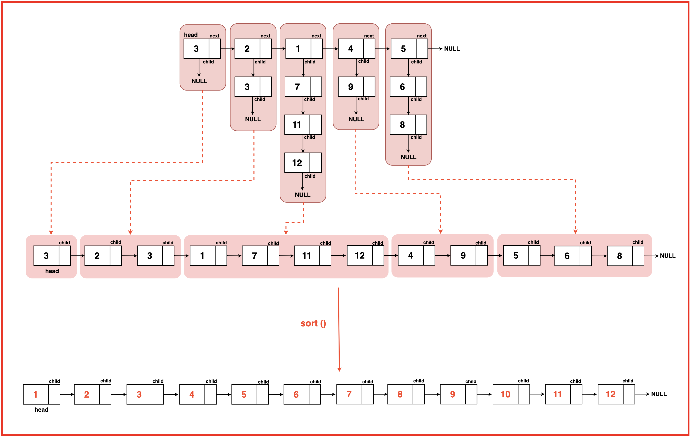
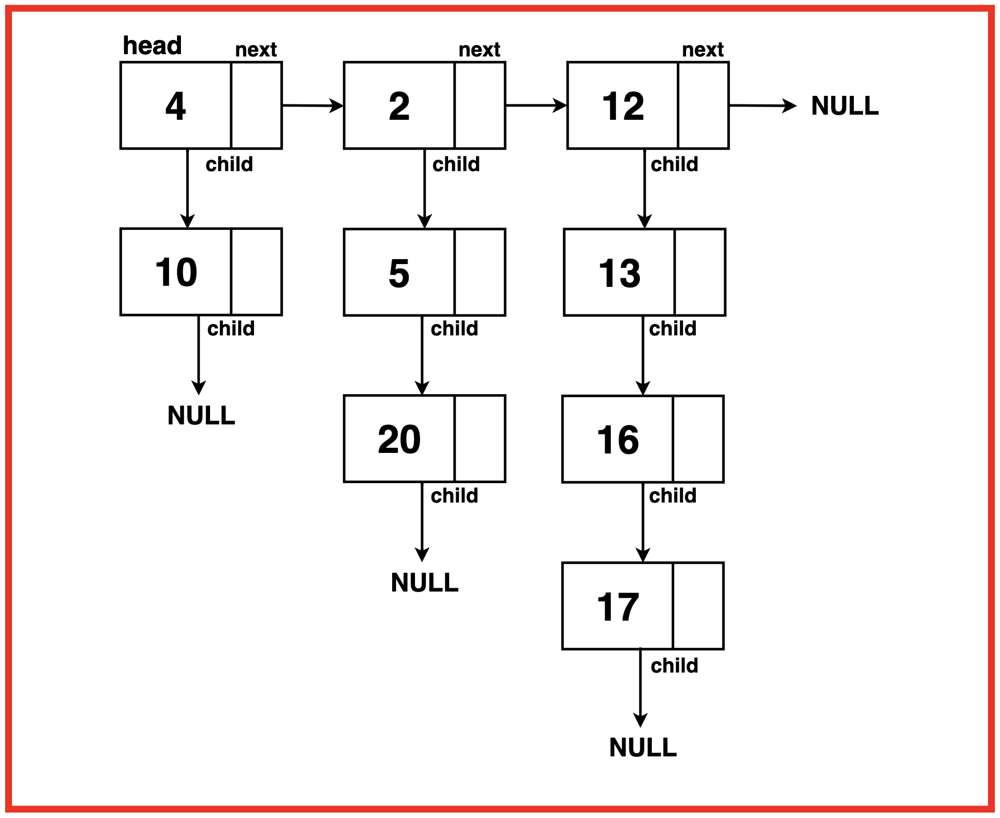
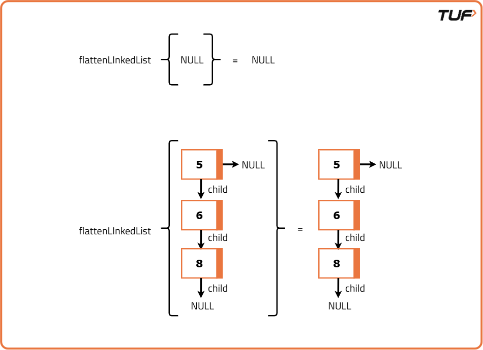
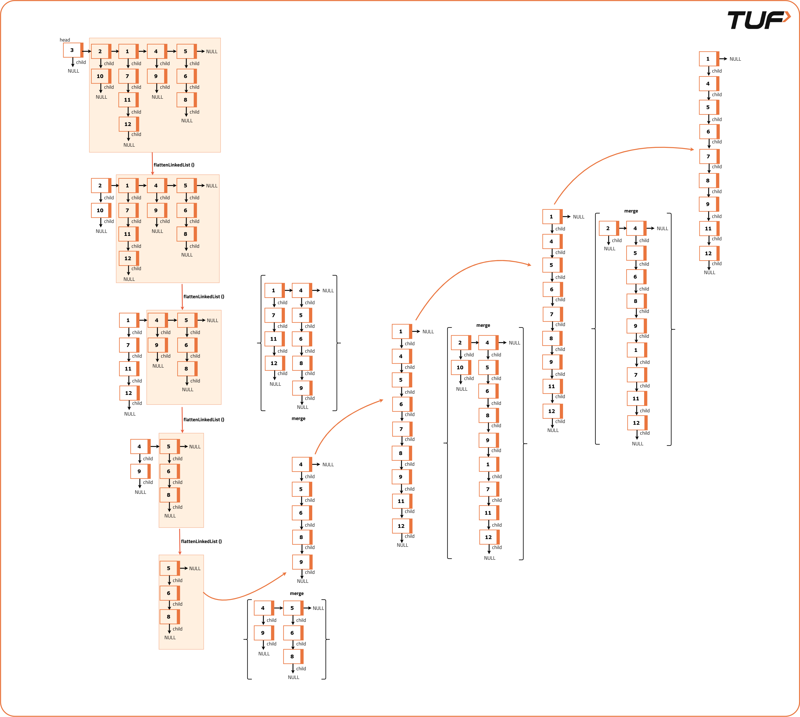

Flattening a Linked List
Problem Statement: Given a linked list containing ‘N’ head nodes where every node in the linked list contains two pointers:
Each of these child linked lists is in sorted order and connected by a 'child' pointer. Your task is to flatten this linked list such that all nodes appear in a single layer or level in a 'sorted order'.
Examples
Example 1:Input:

Output: 1 2 3 4 5 6 7 8 9 10 11 12 Explanation: The linked list is flattened in sorted order, resulting in a single layer with all nodes appearing in ascending order.
Example 2: Input:
Output: 1 2 3 4 5 6 7 8 9 10 11 12 Explanation: The linked list is flattened in sorted order, resulting in a single layer with all nodes appearing in ascending order.Disclaimer: Here is the practice link to help you assess your knowledge better. It's highly recommend trying to solve it before looking at the solution.
Brute Force
Algorithm
- Initialize an array to store node values and traverse the list, collecting values from both top-level and child nodes.
- Sort the array to arrange the values in ascending order.
- Create and return a new linked list from the sorted array.
Code
#include <bits/stdc++.h>
using namespace std;
// Definition of special linked list:
struct ListNode {
int val;
ListNode *next;
ListNode *child;
ListNode() {
val = 0;
next = NULL;
child = NULL;
}
ListNode(int data1) {
val = data1;
next = NULL;
child = NULL;
}
ListNode(int data1, ListNode *next1, ListNode* next2) {
val = data1;
next = next1;
child = next1;
}
};
class Solution {
private:
// Function to convert a vector to a linked list
ListNode* convertArrToLinkedList(vector<int>& arr) {
/* Create a dummy node to serve as
the head of the linked list */
ListNode* dummyNode = new ListNode(-1);
ListNode* temp = dummyNode;
/* Iterate through the vector and
create nodes with vector elements */
for (int i=0; i < arr.size(); i++) {
// Create a new node with the vector element
temp->child = new ListNode(arr[i]);
// Update the temporary pointer
temp = temp->child;
}
/* Return the linked list starting
from the next of the dummy node */
return dummyNode->child;
}
public:
// Function to flatten a linked list with child pointers
ListNode* flattenLinkedList(ListNode* head) {
vector<int> arr;
// Traverse through the linked list
while (head != nullptr) {
/* Traverse through the child
nodes of each head node */
ListNode* t2 = head;
while (t2 != nullptr) {
// Store each node's data in the array
arr.push_back(t2->val);
// Move to the next child node
t2 = t2->child;
}
// Move to the next head node
head = head->next;
}
// Sort the array containing node values
sort(arr.begin(), arr.end());
// Convert the sorted array back to a linked list
return convertArrToLinkedList(arr);
}
};
// Function to print the linked list
void printLinkedList(ListNode* head) {
while (head != nullptr) {
cout << head->val << " ";
head = head->child;
}
cout << endl;
}
// Function to print the linked list in a grid-like structure
void printOriginalLinkedList(ListNode* head, int depth) {
while (head != nullptr) {
cout << head->val;
/* If child exists, recursively
print it with indentation */
if (head->child) {
cout << " -> ";
printOriginalLinkedList(head->child, depth + 1);
}
// Add vertical bars for each level in the grid
if (head->next) {
cout << endl;
for (int i = 0; i < depth; ++i) {
cout << "| ";
}
}
head = head->next;
}
}
int main() {
// Create a linked list with child pointers
ListNode* head = new ListNode(5);
head->child = new ListNode(14);
head->next = new ListNode(10);
head->next->child = new ListNode(4);
head->next->next = new ListNode(12);
head->next->next->child = new ListNode(20);
head->next->next->child->child = new ListNode(13);
head->next->next->next = new ListNode(7);
head->next->next->next->child = new ListNode(17);
// Print the original linked list structure
cout << "Original linked list:" << endl;
printOriginalLinkedList(head, 0);
// Creating an instance of Solution class
Solution sol;
// Function call to flatten the linked list
ListNode* flattened = sol.flattenLinkedList(head);
// Printing the flattened linked list
cout << "\nFlattened linked list: ";
printLinkedList(flattened);
return 0;
}Complexity Analysis
Time Complexity: O(N x M) + O(N x M log(N x M)) + O(N x M), where N is the number of nodes along the next pointers and M is the number of nodes along the child pointers.
O(N x M) because we traverse through all the nodes, iterating through N nodes along the next pointers and M nodes along the child pointers.
O(N x M log(N x M)) because we sort the array containing N x M total elements.
O(N x M) because we reconstruct the linked list from the sorted array by iterating over the N x M elements.
Space Complexity: O(N x M) + O(N x M), where N is the number of nodes along the next pointers and M is the number of nodes along the child pointers.
O(N x M) for storing all the elements in an additional array for sorting.
O(N x M) to reconstruct the linked list from the array after sorting.
Optimal Approach
Algorithm


Code
#include <bits/stdc++.h>
using namespace std;
// Definition of special linked list
struct ListNode {
int val;
ListNode *next;
ListNode *child;
ListNode() {
val = 0;
next = NULL;
child = NULL;
}
ListNode(int data1) {
val = data1;
next = NULL;
child = NULL;
}
ListNode(int data1, ListNode *next1, ListNode* next2) {
val = data1;
next = next1;
child = next1;
}
};
class Solution {
private:
/* Merge the two linked lists in a particular
order based on the data value */
ListNode* merge(ListNode* list1, ListNode* list2){
/* Create a dummy node as a
placeholder for the result */
ListNode* dummyNode = new ListNode(-1);
ListNode* res = dummyNode;
// Merge the lists based on data values
while(list1 != NULL && list2 != NULL){
if(list1->val < list2->val){
res->child = list1;
res = list1;
list1 = list1->child;
}
else{
res->child = list2;
res = list2;
list2 = list2->child;
}
res->next = NULL;
}
// Connect the remaining elements if any
if(list1){
res->child = list1;
} else {
res->child = list2;
}
// Break the last node's link to prevent cycles
if(dummyNode->child){
dummyNode->child->next = NULL;
}
return dummyNode->child;
}
public:
// Function to flatten a linked list with child pointers
ListNode* flattenLinkedList(ListNode* head) {
// If head is null or there is no next node
if(head == NULL || head->next == NULL){
return head; // Return head
}
// Recursively flatten the rest of the linked list
ListNode* mergedHead = flattenLinkedList(head->next);
// Merge the lists
head = merge(head, mergedHead);
return head;
}
};
// Function to print the linked list
void printLinkedList(ListNode* head) {
while (head != nullptr) {
cout << head->val << " ";
head = head->child;
}
cout << endl;
}
// Function to print the linked list in a grid-like structure
void printOriginalLinkedList(ListNode* head, int depth) {
while (head != nullptr) {
cout << head->val;
/* If child exists, recursively
print it with indentation */
if (head->child) {
cout << " -> ";
printOriginalLinkedList(head->child, depth + 1);
}
// Add vertical bars for each level in the grid
if (head->next) {
cout << endl;
for (int i = 0; i < depth; ++i) {
cout << "| ";
}
}
head = head->next;
}
}
int main() {
// Create a linked list with child pointers
ListNode* head = new ListNode(5);
head->child = new ListNode(14);
head->next = new ListNode(10);
head->next->child = new ListNode(4);
head->next->next = new ListNode(12);
head->next->next->child = new ListNode(20);
head->next->next->child->child = new ListNode(13);
head->next->next->next = new ListNode(7);
head->next->next->next->child = new ListNode(17);
// Print the original linked list structure
cout << "Original linked list:" << endl;
printOriginalLinkedList(head, 0);
// Creating an instance of Solution class
Solution sol;
// Function call to flatten the linked list
ListNode* flattened = sol.flattenLinkedList(head);
// Printing the flattened linked list
cout << "\nFlattened linked list: ";
printLinkedList(flattened);
return 0;
}Complexity Analysis
Time Complexity: O(N x (2M)) ~ O(2N x M), where N is the length of the linked list along the next pointer and M is the length of the linked list along the child pointers.
The merge operation in each recursive call takes time complexity proportional to the length of the linked lists being merged, as they have to iterate over the entire lists. Since the vertical depth of the linked lists is assumed to be M, the time complexity for a single merge operation is proportional to O(2M).
This operation is performed N number of times (to each and every node along the next pointer list), hence the resultant time complexity becomes O(N x 2M).
Space Complexity: O(1), as this code uses no external space or additional data structures to store values. But a recursive stack uses O(N) space to build the recursive calls for each node along the next pointer list.